Chapter 18 Appendix F: creating figures
In this section, we create figures for the paper.
The following libraries are used.
library(tidyverse) # For efficient handling of data.frame
library(DT) # For using datatable
library(scran) # For using scran
library(Seurat) # For using Seurat
library(monocle3) # For using Monocle 3
library(SC3) # For using SC3
library(ComplexHeatmap) # For ComplexHeatmap
library(circlize) # For color mapping function in ComplexHeatmap
library(RColorBrewer) # For using brewer.pal()
library(scales) # For using show_col()
library(Spaniel) # For using Spaniel18.1 PBMCs datasets
18.1.1 Multi-layered analysis
Load the data.
source("R/plot.R")
pbmc_4000 <- readRDS(file = "backup/10_400_pbmc_4000_all.rds")
pbmc_6000 <- readRDS(file = "backup/11_400_pbmc_6000_all.rds")Change the labels of pbmc_4000[["sample"]][["seuratFindClusters_CO_cell"]]
to make it correspond to those of
pbmc_6000[["sample"]][["seuratFindClusters_CO_cell"]].
df <- pbmc_4000[["sample"]]
df$seuratFindClusters_CO_cell <- as.character(df$seuratFindClusters_CO_cell)
df[df$seuratFindClusters_CO_cell == "3",]$seuratFindClusters_CO_cell <- "333"
df[df$seuratFindClusters_CO_cell == "4",]$seuratFindClusters_CO_cell <- "444"
df[df$seuratFindClusters_CO_cell == "333",]$seuratFindClusters_CO_cell <- "4"
df[df$seuratFindClusters_CO_cell == "444",]$seuratFindClusters_CO_cell <- "3"
df$seuratFindClusters_CO_cell <- as.factor(df$seuratFindClusters_CO_cell)
pbmc_4000[["sample"]] <- dfThe following function plot_MultiHeatmaps_SignxSamp() vertically concatenates
two or more heat maps across different databases.
# ----------------------------------------
# pbmc_4000
# ----------------------------------------
filename <- "figures/figure_20_0010.png"
png(file = filename, height = 1500, width = 1500, res = 300)
plot_MultiHeatmaps_SignxSamp(
obj = pbmc_4000,
data_types = c("CO", "GO", "KEGG"),
categories = c("cell", "BP", "pathway"),
algo_names = c("seuratFindClusters", "seuratFindClusters",
"seuratFindClusters"),
show_labels = c(TRUE, TRUE, TRUE),
splitting = TRUE, method = "ward.D2", show_nReads = FALSE,
title = "pbmc_4000",
names = c("CO:\ncell", "GO:\nBP", "KEGG:\npathway"),
show_rownames_sign = FALSE, show_rownames_label = FALSE,
show_rownames_nReads = FALSE, default_colors = c(TRUE, FALSE, FALSE))
dev.off()
# ----------------------------------------
# pbmc_6000
# ----------------------------------------
filename <- "figures/figure_20_0011.png"
png(file = filename, height = 1500, width = 1500, res = 300)
plot_MultiHeatmaps_SignxSamp(
obj = pbmc_6000,
data_types = c("CO", "GO", "KEGG"),
categories = c("cell", "BP", "pathway"),
algo_names = c("seuratFindClusters", "seuratFindClusters",
"seuratFindClusters"),
show_labels = c(TRUE, TRUE, TRUE),
splitting = TRUE, method = "ward.D2", show_nReads = FALSE,
title = "pbmc_6000",
names = c("CO:\ncell", "GO:\nBP", "KEGG:\npathway"),
show_rownames_sign = FALSE, show_rownames_label = FALSE,
show_rownames_nReads = FALSE, default_colors = c(TRUE, FALSE, FALSE))
dev.off()

Make UMAPs with clustering results.
# ----------------------------------------
# pbmc_4000
# ----------------------------------------
p <- plot_umap_sign(obj = pbmc_4000, data_type = "CO", category = "cell",
algo_name = "seuratFindClusters",
theta = NULL, phi = NULL,
title = "pbmc_4000 (CO: cell)", title_size = 16,
xlabel = "UMAP_1", ylabel = "UMAP_2", zlabel = NULL,
default_color = TRUE)
filename <- "figures/figure_20_0020.png"
ggsave(file = filename, plot = p, dpi = 300, width = 4.7, height = 4)
p <- plot_umap_sign(obj = pbmc_4000, data_type = "GO", category = "BP",
algo_name = "seuratFindClusters",
theta = NULL, phi = NULL,
title = "pbmc_4000 (GO: BP)", title_size = 16,
xlabel = "UMAP_1", ylabel = "UMAP_2", zlabel = NULL,
default_color = TRUE)
filename <- "figures/figure_20_0021.png"
ggsave(file = filename, plot = p, dpi = 300, width = 4.7, height = 4)
p <- plot_umap_sign(obj = pbmc_4000, data_type = "KEGG", category = "pathway",
algo_name = "seuratFindClusters",
theta = NULL, phi = NULL,
title = "pbmc_4000 (KEGG: pathway)", title_size = 16,
xlabel = "UMAP_1", ylabel = "UMAP_2", zlabel = NULL,
default_color = TRUE)
filename <- "figures/figure_20_0022.png"
ggsave(file = filename, plot = p, dpi = 300, width = 4.7, height = 4)
# ----------------------------------------
# pbmc_6000
# ----------------------------------------
p <- plot_umap_sign(obj = pbmc_6000, data_type = "CO", category = "cell",
algo_name = "seuratFindClusters",
theta = NULL, phi = NULL,
title = "pbmc_6000 (CO: cell)", title_size = 16,
xlabel = "UMAP_1", ylabel = "UMAP_2", zlabel = NULL,
default_color = TRUE)
filename <- "figures/figure_20_0025.png"
ggsave(file = filename, plot = p, dpi = 300, width = 4.8, height = 4)
p <- plot_umap_sign(obj = pbmc_6000, data_type = "GO", category = "BP",
algo_name = "seuratFindClusters",
theta = NULL, phi = NULL,
title = "pbmc_6000 (GO: BP)", title_size = 16,
xlabel = "UMAP_1", ylabel = "UMAP_2", zlabel = NULL,
default_color = TRUE)
filename <- "figures/figure_20_0026.png"
ggsave(file = filename, plot = p, dpi = 300, width = 4.8, height = 4)
p <- plot_umap_sign(obj = pbmc_6000, data_type = "KEGG", category = "pathway",
algo_name = "seuratFindClusters",
theta = NULL, phi = NULL,
title = "pbmc_6000 (KEGG: pathway)", title_size = 16,
xlabel = "UMAP_1", ylabel = "UMAP_2", zlabel = NULL,
default_color = TRUE)
filename <- "figures/figure_20_0027.png"
ggsave(file = filename, plot = p, dpi = 300, width = 4.8, height = 4)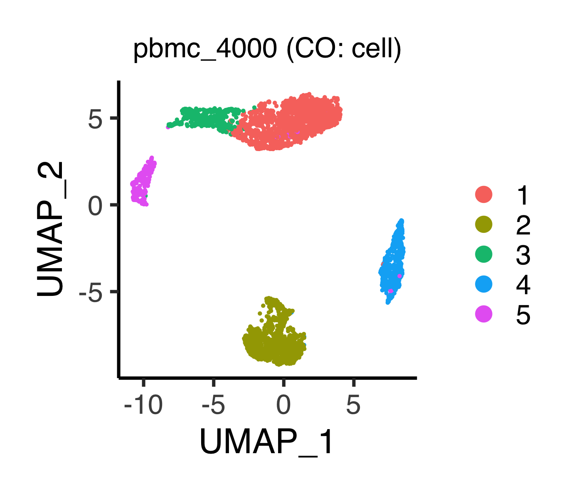

 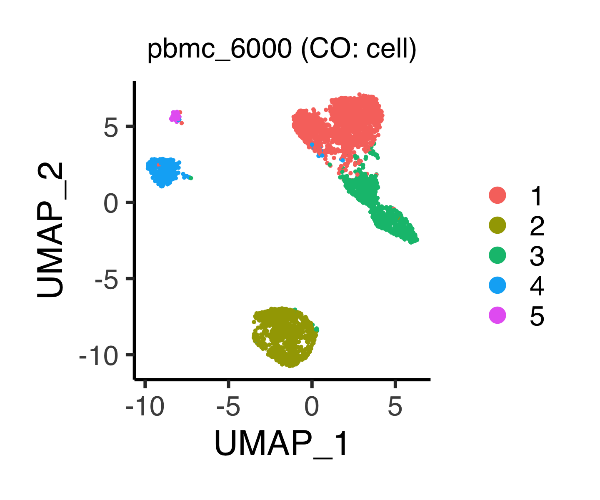
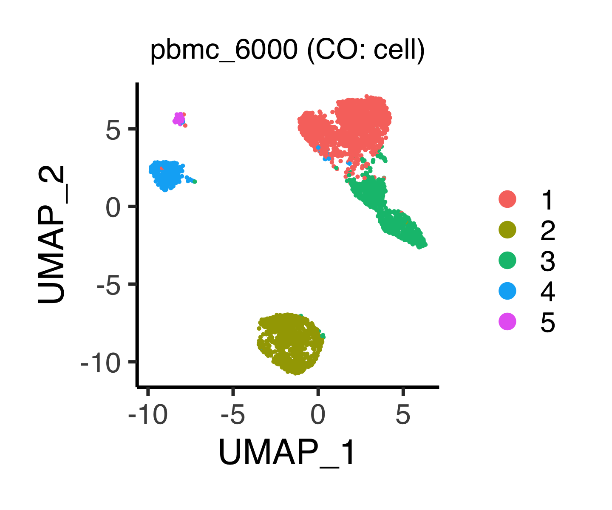


Make violin plots.
# ----------------------------------------
# pbmc_4000
# ----------------------------------------
#------------------------------
# CO
#------------------------------
p <- plot_violin_signScore(
obj = pbmc_4000, sign_name = "CL:0000576_S",
data_type_for_label = "CO", category_for_label = "cell",
algo_name_for_label = "seuratFindClusters",
data_type_for_expr = "CO", category_for_expr = "cell",
title = "CL:0000576_S\nMonocyte\nFGS = {MEF2C, LYN, ...}",
title_size = 16, default_color = TRUE)
filename <- "figures/figure_20_0030.png"
ggsave(file = filename, plot = p, dpi = 300, width = 4, height = 3.5)
p <- plot_violin_signScore(
obj = pbmc_4000, sign_name = "CL:0000623_V",
data_type_for_label = "CO", category_for_label = "cell",
algo_name_for_label = "seuratFindClusters",
data_type_for_expr = "CO", category_for_expr = "cell",
title = "CL:0000623_V\nNatural killer cell\nFGS = {SH2D1A, KLRD1, ...}",
title_size = 16, default_color = TRUE)
filename <- "figures/figure_20_0031.png"
ggsave(file = filename, plot = p, dpi = 300, width = 4, height = 3.5)
p <- plot_violin_signScore(
obj = pbmc_4000, sign_name = "CL:0000789_S",
data_type_for_label = "CO", category_for_label = "cell",
algo_name_for_label = "seuratFindClusters",
data_type_for_expr = "CO", category_for_expr = "cell",
title = "CL:0000789_S\nAlpha-beta T cell\nFGS = {CD3E, CD3D, ...}",
title_size = 16, default_color = TRUE)
filename <- "figures/figure_20_0032.png"
ggsave(file = filename, plot = p, dpi = 300, width = 4, height = 3.5)
#------------------------------
# GO
#------------------------------
p <- plot_violin_signScore(
obj = pbmc_4000, sign_name = "GO:0001914_S",
data_type_for_label = "GO", category_for_label = "BP",
algo_name_for_label = "seuratFindClusters",
data_type_for_expr = "GO", category_for_expr = "BP",
title = "GO:0001914_S\nRegulation of T cell..\nFGS = {PTPRC, IL7R, ...}",
title_size = 16, default_color = FALSE)
filename <- "figures/figure_20_0033.png"
ggsave(file = filename, plot = p, dpi = 300, width = 4, height = 3.5)
p <- plot_violin_signScore(
obj = pbmc_4000, sign_name = "GO:0050853_V",
data_type_for_label = "GO", category_for_label = "BP",
algo_name_for_label = "seuratFindClusters",
data_type_for_expr = "GO", category_for_expr = "BP",
title = "GO:0050853_V\nB cell differentiation\nFGS = {CD19, CD79B, ...}",
title_size = 16, default_color = FALSE)
filename <- "figures/figure_20_0034.png"
ggsave(file = filename, plot = p, dpi = 300, width = 4, height = 3.5)
#------------------------------
# KEGG
#------------------------------
p <- plot_violin_signScore(
obj = pbmc_4000, sign_name = "path:hsa04662_V",
data_type_for_label = "KEGG", category_for_label = "pathway",
algo_name_for_label = "seuratFindClusters",
data_type_for_expr = "KEGG", category_for_expr = "pathway",
title = "path:hsa04662_V\nB cell receptor..\nFGS = {CD19, CD72, ..}",
title_size = 16, default_color = FALSE)
filename <- "figures/figure_20_0035.png"
ggsave(file = filename, plot = p, dpi = 300, width = 4, height = 3.5)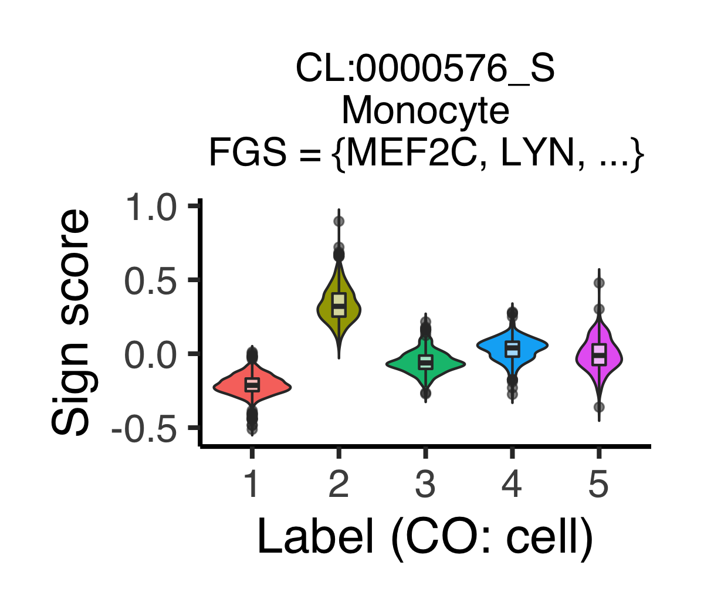
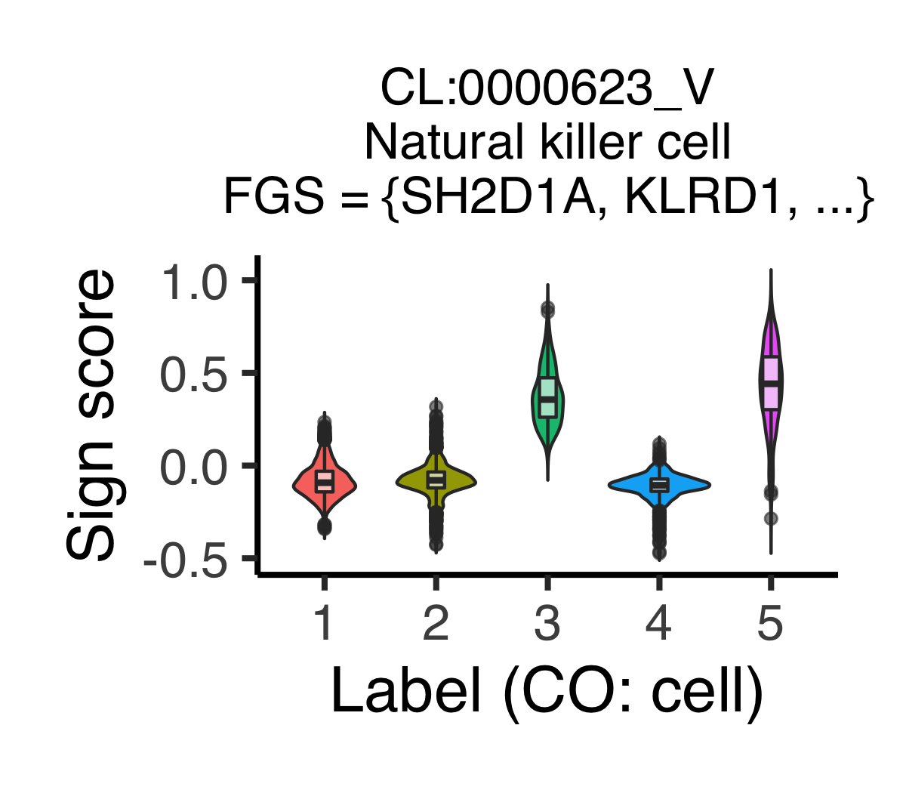
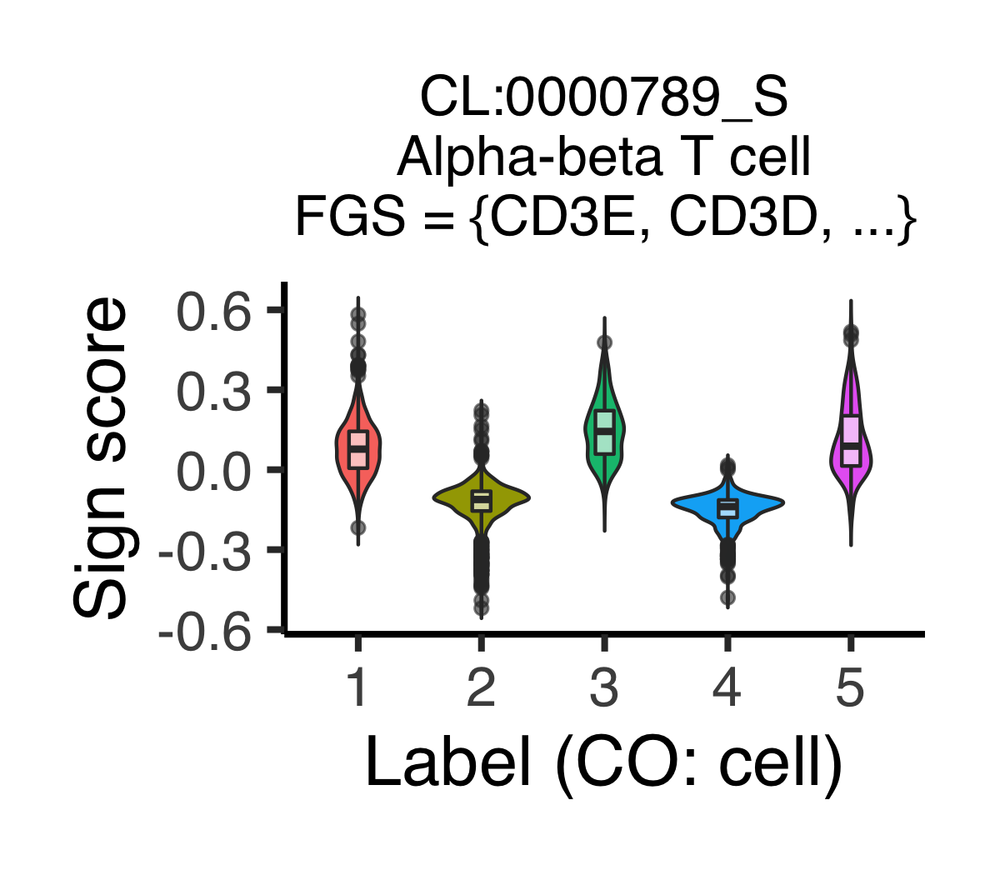
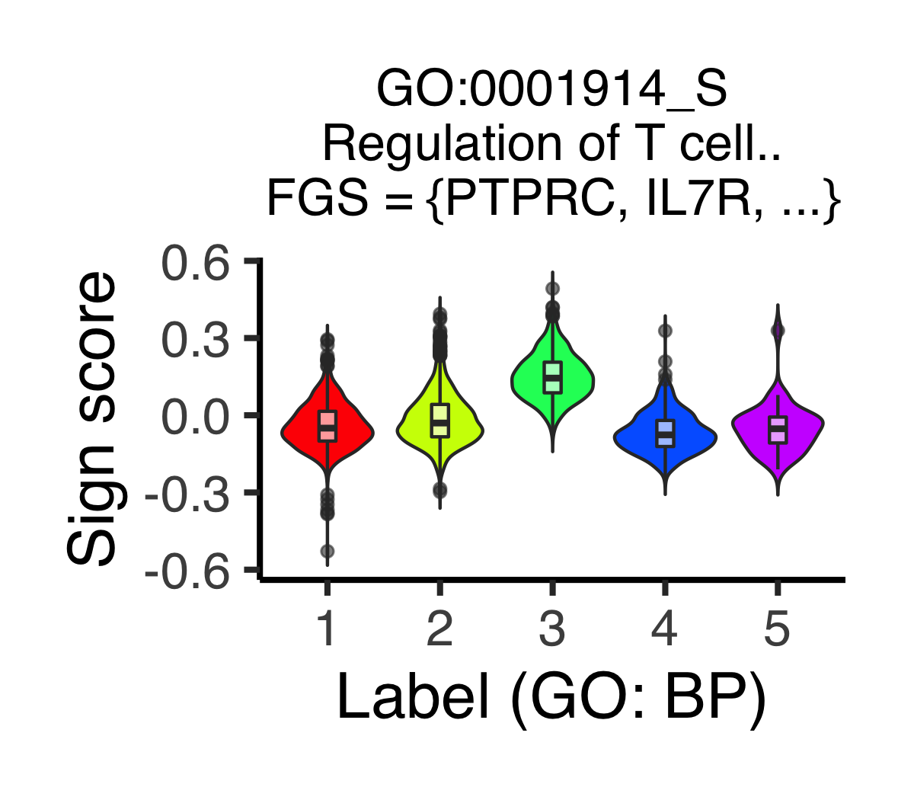
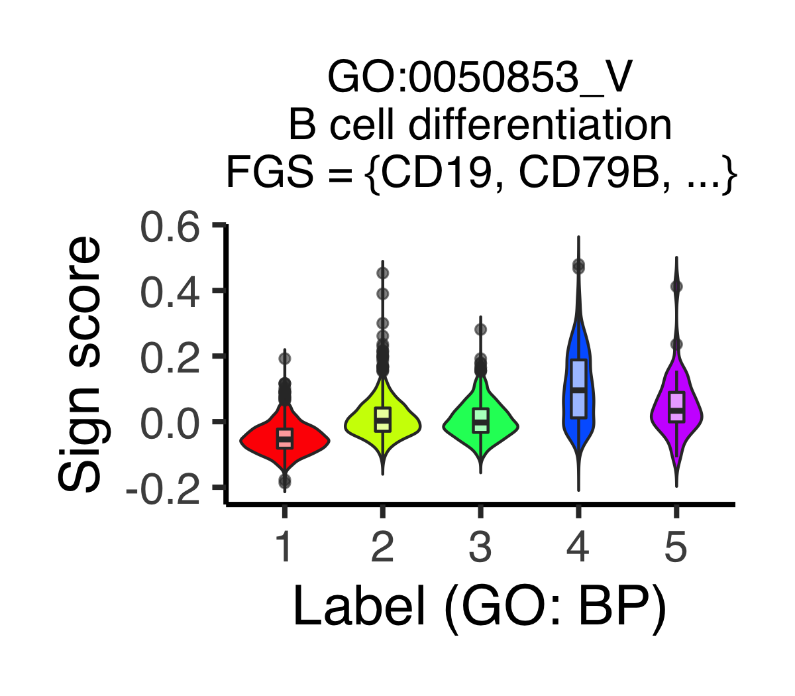

# ----------------------------------------
# pbmc_6000
# ----------------------------------------
#------------------------------
# CO
#------------------------------
p <- plot_violin_signScore(
obj = pbmc_6000, sign_name = "CL:0000234_S",
data_type_for_label = "CO", category_for_label = "cell",
algo_name_for_label = "seuratFindClusters",
data_type_for_expr = "CO", category_for_expr = "cell",
title = "CL:0000234_S\nPhagocyte\nFGS = {CD14, FGR, ...}",
title_size = 16, default_color = TRUE)
filename <- "figures/figure_20_0040.png"
ggsave(file = filename, plot = p, dpi = 300, width = 4, height = 3.5)
p <- plot_violin_signScore(
obj = pbmc_6000, sign_name = "CL:0000623_S",
data_type_for_label = "CO", category_for_label = "cell",
algo_name_for_label = "seuratFindClusters",
data_type_for_expr = "CO", category_for_expr = "cell",
title = "CL:0000623_S\nNatural killer cell\nFGS = {CD160, KLRD1, ...}",
title_size = 16, default_color = TRUE)
filename <- "figures/figure_20_0041.png"
ggsave(file = filename, plot = p, dpi = 300, width = 4, height = 3.5)
p <- plot_violin_signScore(
obj = pbmc_6000, sign_name = "CL:0000782_V",
data_type_for_label = "CO", category_for_label = "cell",
algo_name_for_label = "seuratFindClusters",
data_type_for_expr = "CO", category_for_expr = "cell",
title = "CL:0000782_V\nMyeloid dendritic cell\nFGS = {CD2, CCR7, ...}",
title_size = 16, default_color = TRUE)
filename <- "figures/figure_20_0042.png"
ggsave(file = filename, plot = p, dpi = 300, width = 4, height = 3.5)
#------------------------------
# GO
#------------------------------
p <- plot_violin_signScore(
obj = pbmc_6000, sign_name = "GO:0050852_V",
data_type_for_label = "GO", category_for_label = "BP",
algo_name_for_label = "seuratFindClusters",
data_type_for_expr = "GO", category_for_expr = "BP",
title = "GO:0050852_V\nT cell receptor..\nFGS = {CD3E, CD247, ...}",
title_size = 16, default_color = FALSE)
filename <- "figures/figure_20_0043.png"
ggsave(file = filename, plot = p, dpi = 300, width = 4, height = 3.5)
p <- plot_violin_signScore(
obj = pbmc_6000, sign_name = "GO:0002577_V",
data_type_for_label = "GO", category_for_label = "BP",
algo_name_for_label = "seuratFindClusters",
data_type_for_expr = "GO", category_for_expr = "BP",
title = "GO:0002577_V\nRegulation of antigen..\nFGS = {HLA-DOB, CCR7, ...}",
title_size = 16, default_color = FALSE)
filename <- "figures/figure_20_0044.png"
ggsave(file = filename, plot = p, dpi = 300, width = 4, height = 3.5)
#------------------------------
# KEGG
#------------------------------
p <- plot_violin_signScore(
obj = pbmc_6000, sign_name = "path:hsa04658_V",
data_type_for_label = "KEGG", category_for_label = "pathway",
algo_name_for_label = "seuratFindClusters",
data_type_for_expr = "KEGG", category_for_expr = "pathway",
title = "path:hsa04658_V\nTh1 and Th2 cell diff..\nFGS = {CD247, CD3E, ...}",
title_size = 16, default_color = FALSE)
filename <- "figures/figure_20_0045.png"
ggsave(file = filename, plot = p, dpi = 300, width = 4, height = 3.5)
p <- plot_violin_signScore(
obj = pbmc_6000, sign_name = "path:hsa04662_S",
data_type_for_label = "KEGG", category_for_label = "pathway",
algo_name_for_label = "seuratFindClusters",
data_type_for_expr = "KEGG", category_for_expr = "pathway",
title = "path:hsa04662_S\nB cell receptor..\nFGS = {CD19, CD72, ...}",
title_size = 16, default_color = FALSE)
filename <- "figures/figure_20_0046.png"
ggsave(file = filename, plot = p, dpi = 300, width = 4, height = 3.5)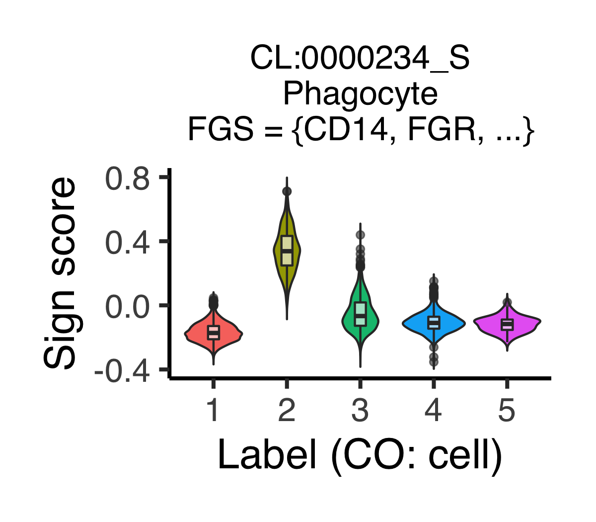
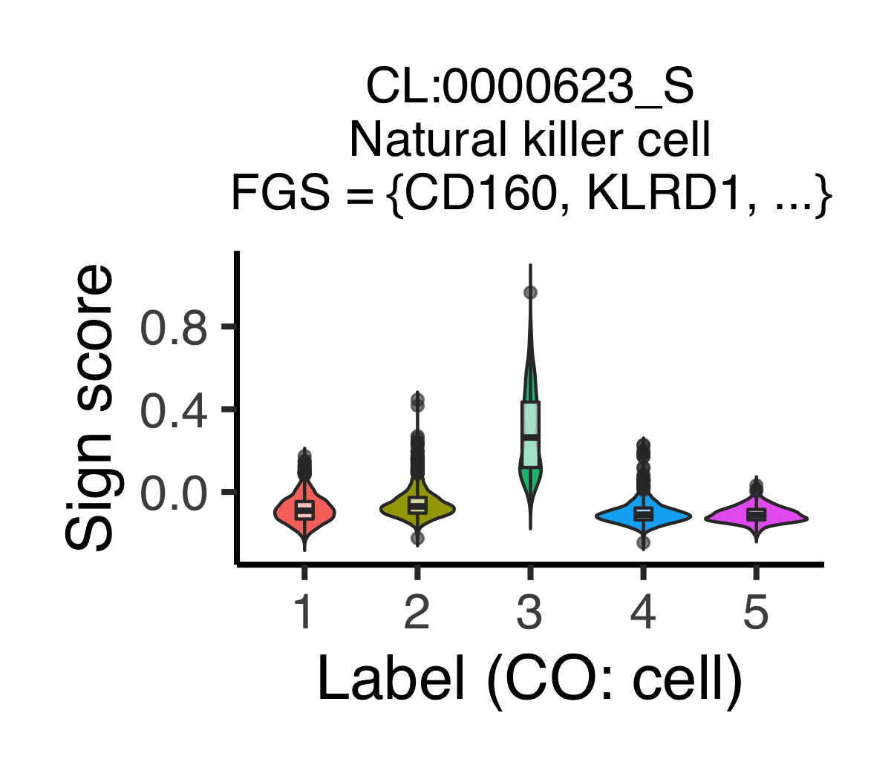

 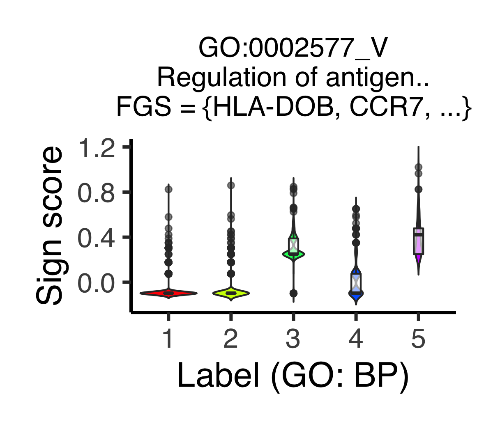
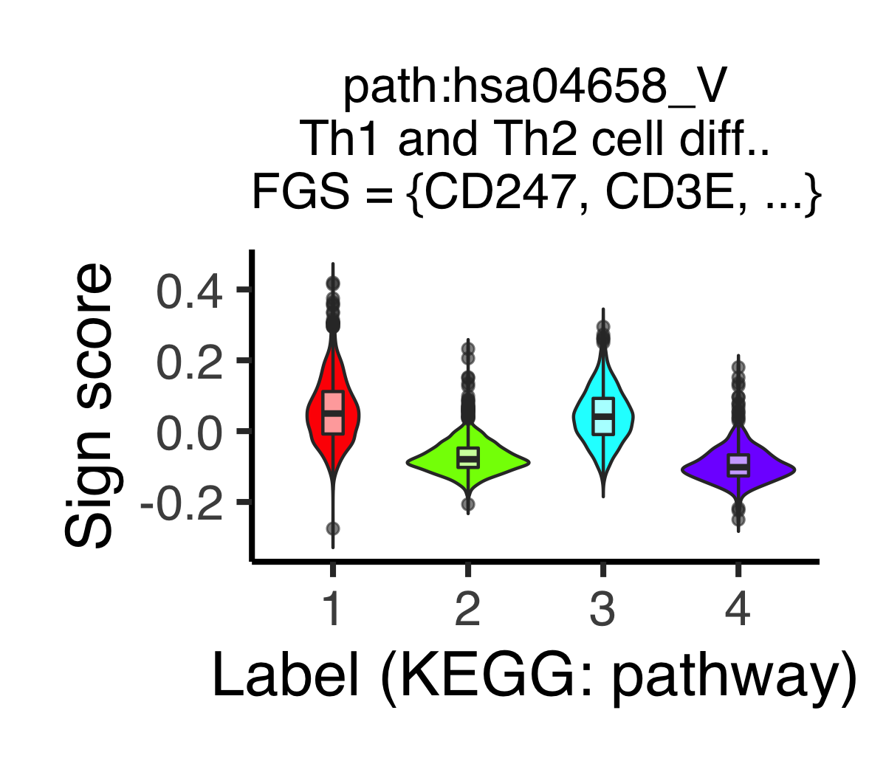
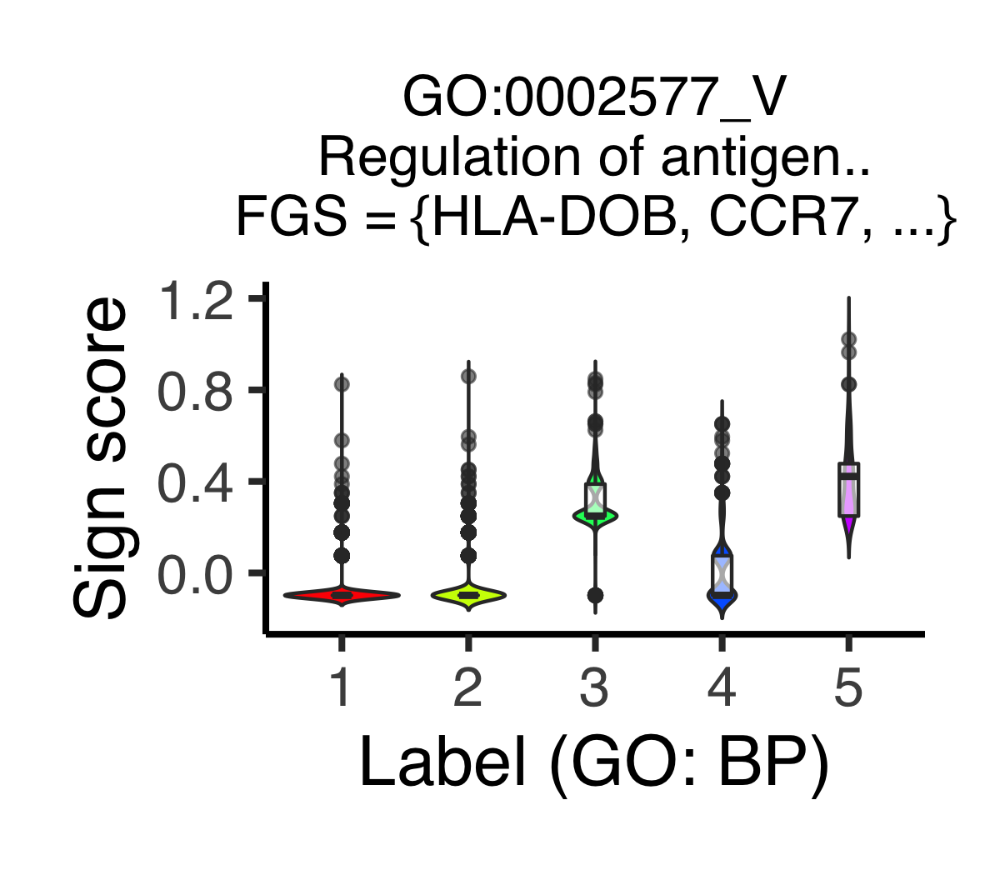
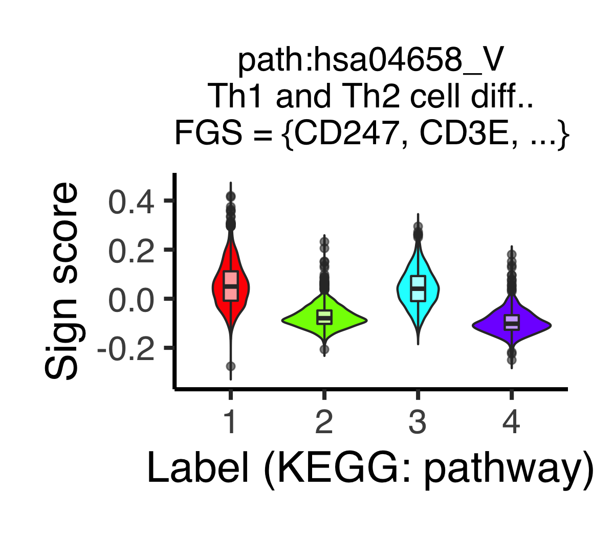

18.1.2 Infer population ratios
Load the data.
rm(list = ls())
# ----------------------------------------
# pbmc_4000
# ----------------------------------------
pbmc_4000_scran <- readRDS(file = "backup/10_501_pbmc_4000_scran.rds")
pbmc_4000_seurat <- readRDS(file = "backup/10_601_pbmc_4000_seurat.rds")
pbmc_4000_sccatch <- readRDS(file ="backup/10_602_pbmc_4000_seurat_sccatch.rds")
pbmc_4000_monocle <- readRDS(file = "backup/10_701_pbmc_4000_monocle3.rds")
pbmc_4000_sc3 <- readRDS(file = "backup/10_801_pbmc_4000_sc3.rds")
pbmc_4000_asurat <- readRDS(file = "backup/10_901_pbmc_4000_asurat.rds")
# ----------------------------------------
# pbmc_6000
# ----------------------------------------
pbmc_6000_scran <- readRDS(file = "backup/11_501_pbmc_6000_scran.rds")
pbmc_6000_seurat <- readRDS(file = "backup/11_601_pbmc_6000_seurat.rds")
pbmc_6000_sccatch <- readRDS(file ="backup/11_602_pbmc_6000_seurat_sccatch.rds")
pbmc_6000_monocle <- readRDS(file = "backup/11_701_pbmc_6000_monocle3.rds")
pbmc_6000_sc3 <- readRDS(file = "backup/11_801_pbmc_6000_sc3.rds")
pbmc_6000_asurat <- readRDS(file = "backup/11_901_pbmc_6000_asurat.rds")The hypothetical results can be obtained from Cao et al., Front. Genet. (2020).
pbmc_4000_scsa <- data.frame(
cell_type = c("T cell", "Monocyte", "B cell", "NK or NKT cell",
"Megakaryocyte"),
n = c(0.4226, 0.2707, 0.1509, 0.1546, 0.0012)
)
pbmc_6000_scsa <- data.frame(
cell_type = c("T cell", "Monocyte", "B cell", "NK or NKT cell",
"Megakaryocyte"),
n = c(0.4920, 0.2652, 0.1292, 0.1102, 0.0035)
)Change the numbers of cells into ratios.
take_ratio <- function(df){
df$n <- as.numeric(df$n) / sum(as.numeric(df$n))
return(df)
}
# ----------------------------------------
# pbmc_4000
# ----------------------------------------
pbmc_4000_scran <- take_ratio(pbmc_4000_scran[["population"]])
pbmc_4000_seurat <- take_ratio(pbmc_4000_seurat@misc[["population"]])
pbmc_4000_sccatch <- take_ratio(pbmc_4000_sccatch@misc[["population"]])
pbmc_4000_monocle <- take_ratio(pbmc_4000_monocle[["population"]])
pbmc_4000_sc3 <- take_ratio(pbmc_4000_sc3[["population"]])
pbmc_4000_asurat <- take_ratio(pbmc_4000_asurat[["population"]])
# ----------------------------------------
# pbmc_6000
# ----------------------------------------
pbmc_6000_scran <- take_ratio(pbmc_6000_scran[["population"]])
pbmc_6000_seurat <- take_ratio(pbmc_6000_seurat@misc[["population"]])
pbmc_6000_sccatch <- take_ratio(pbmc_6000_sccatch@misc[["population"]])
pbmc_6000_monocle <- take_ratio(pbmc_6000_monocle[["population"]])
pbmc_6000_sc3 <- take_ratio(pbmc_6000_sc3[["population"]])
pbmc_6000_asurat <- take_ratio(pbmc_6000_asurat[["population"]])Add the names of algorithms.
# ----------------------------------------
# pbmc_4000
# ----------------------------------------
pbmc_4000_scsa$algorithm <- "SCSA"
pbmc_4000_scran$algorithm <- "scran"
pbmc_4000_seurat$algorithm <- "Seurat"
pbmc_4000_sccatch$algorithm <- "Seurat with scCATCH"
pbmc_4000_monocle$algorithm <- "Monocle 3"
pbmc_4000_sc3$algorithm <- "SC3"
pbmc_4000_asurat$algorithm <- "ASURAT"
# ----------------------------------------
# pbmc_6000
# ----------------------------------------
pbmc_6000_scsa$algorithm <- "SCSA"
pbmc_6000_scran$algorithm <- "scran"
pbmc_6000_seurat$algorithm <- "Seurat"
pbmc_6000_sccatch$algorithm <- "Seurat with scCATCH"
pbmc_6000_monocle$algorithm <- "Monocle 3"
pbmc_6000_sc3$algorithm <- "SC3"
pbmc_6000_asurat$algorithm <- "ASURAT"Concatenate all of the data.
# ----------------------------------------
# pbmc_4000
# ----------------------------------------
pbmc_4000_df <- rbind(pbmc_4000_scsa, pbmc_4000_scran, pbmc_4000_seurat,
pbmc_4000_sccatch, pbmc_4000_monocle, pbmc_4000_sc3,
pbmc_4000_asurat)
# ----------------------------------------
# pbmc_6000
# ----------------------------------------
pbmc_6000_df <- rbind(pbmc_6000_scsa, pbmc_6000_scran, pbmc_6000_seurat,
pbmc_6000_sccatch, pbmc_6000_monocle, pbmc_6000_sc3,
pbmc_6000_asurat)Show the population sizes.
ymax <- 0.65
xlabel <- ""
ylabel <- "Ratio"
my_colors <- brewer.pal(6, name = "Set1")
size <- 4.5
alpha <- 0.85
jitter_size <- 0.2
set.seed(16)
p <- ggplot() +
geom_boxplot(aes(x = pbmc_4000_df$cell_type, y = pbmc_4000_df$n),
color = "white", alpha = 0, size = 0, coef = 1e10) +
# ----------------------------------------
# Cao et al., 2020.
# ----------------------------------------
geom_jitter(aes(
x = pbmc_4000_df[which(pbmc_4000_df$algorithm == "SCSA"),]$cell_type,
y = pbmc_4000_df[which(pbmc_4000_df$algorithm == "SCSA"),]$n),
color = "black", size = size, shape = 16, alpha = 1,
position = position_jitter(w = jitter_size, h = 0)) +
geom_jitter(aes(
x = pbmc_6000_df[which(pbmc_6000_df$algorithm == "SCSA"),]$cell_type,
y = pbmc_6000_df[which(pbmc_6000_df$algorithm == "SCSA"),]$n),
color = "black", size = size, shape = 16, alpha = 1,
position = position_jitter(w = jitter_size, h = 0)) +
# ----------------------------------------
# pbmc_4000
# ----------------------------------------
geom_jitter(aes(
x = pbmc_4000_df[which(pbmc_4000_df$algorithm == "scran"),]$cell_type,
y = pbmc_4000_df[which(pbmc_4000_df$algorithm == "scran"),]$n),
color = my_colors[1], size = size, shape = 16, alpha = alpha,
position = position_jitter(w = jitter_size, h = 0)) +
geom_jitter(aes(
x = pbmc_4000_df[which(pbmc_4000_df$algorithm == "Seurat"),]$cell_type,
y = pbmc_4000_df[which(pbmc_4000_df$algorithm == "Seurat"),]$n),
color = my_colors[2], size = size, shape = 16, alpha = alpha,
position = position_jitter(w = jitter_size, h = 0)) +
geom_jitter(aes(
x = pbmc_4000_df[which(pbmc_4000_df$algorithm == "Seurat with scCATCH"),]$cell_type,
y = pbmc_4000_df[which(pbmc_4000_df$algorithm == "Seurat with scCATCH"),]$n),
color = my_colors[3], size = size, shape = 16, alpha = alpha,
position = position_jitter(w = jitter_size, h = 0)) +
geom_jitter(aes(
x = pbmc_4000_df[which(pbmc_4000_df$algorithm == "Monocle 3"),]$cell_type,
y = pbmc_4000_df[which(pbmc_4000_df$algorithm == "Monocle 3"),]$n),
color = my_colors[4], size = size, shape = 16, alpha = alpha,
position = position_jitter(w = jitter_size, h = 0)) +
geom_jitter(aes(
x = pbmc_4000_df[which(pbmc_4000_df$algorithm == "SC3"),]$cell_type,
y = pbmc_4000_df[which(pbmc_4000_df$algorithm == "SC3"),]$n),
color = my_colors[5], size = size, shape = 16, alpha = alpha,
position = position_jitter(w = jitter_size, h = 0)) +
geom_jitter(aes(
x = pbmc_4000_df[which(pbmc_4000_df$algorithm == "ASURAT"),]$cell_type,
y = pbmc_4000_df[which(pbmc_4000_df$algorithm == "ASURAT"),]$n),
color = my_colors[6], size = size, shape = 16, alpha = alpha,
position = position_jitter(w = jitter_size, h = 0)) +
# ----------------------------------------
# pbmc_6000
# ----------------------------------------
geom_jitter(aes(
x = pbmc_6000_df[which(pbmc_6000_df$algorithm == "scran"),]$cell_type,
y = pbmc_6000_df[which(pbmc_6000_df$algorithm == "scran"),]$n),
color = my_colors[1], size = size, shape = 16, alpha = alpha,
position = position_jitter(w = jitter_size, h = 0)) +
geom_jitter(aes(
x = pbmc_6000_df[which(pbmc_6000_df$algorithm == "Seurat"),]$cell_type,
y = pbmc_6000_df[which(pbmc_6000_df$algorithm == "Seurat"),]$n),
color = my_colors[2], size = size, shape = 16, alpha = alpha,
position = position_jitter(w = jitter_size, h = 0)) +
geom_jitter(aes(
x = pbmc_6000_df[which(pbmc_6000_df$algorithm == "Seurat with scCATCH"),]$cell_type,
y = pbmc_6000_df[which(pbmc_6000_df$algorithm == "Seurat with scCATCH"),]$n),
color = my_colors[3], size = size, shape = 16, alpha = alpha,
position = position_jitter(w = jitter_size, h = 0)) +
geom_jitter(aes(
x = pbmc_6000_df[which(pbmc_6000_df$algorithm == "Monocle 3"),]$cell_type,
y = pbmc_6000_df[which(pbmc_6000_df$algorithm == "Monocle 3"),]$n),
color = my_colors[4], size = size, shape = 16, alpha = alpha,
position = position_jitter(w = jitter_size, h = 0)) +
geom_jitter(aes(
x = pbmc_6000_df[which(pbmc_6000_df$algorithm == "SC3"),]$cell_type,
y = pbmc_6000_df[which(pbmc_6000_df$algorithm == "SC3"),]$n),
color = my_colors[5], size = size, shape = 16, alpha = alpha,
position = position_jitter(w = jitter_size, h = 0)) +
geom_jitter(aes(
x = pbmc_6000_df[which(pbmc_6000_df$algorithm == "ASURAT"),]$cell_type,
y = pbmc_6000_df[which(pbmc_6000_df$algorithm == "ASURAT"),]$n),
color = my_colors[6], size = size, shape = 16, alpha = alpha,
position = position_jitter(w = jitter_size, h = 0)) +
# ----------------------------------------
# option
# ----------------------------------------
ylim(0, ymax) + scale_x_discrete(guide = guide_axis(angle = 45)) +
labs(title = "", x = xlabel, y = ylabel, colour = "") +
theme_minimal(base_size = 16, base_family = "Helvetica") +
theme(plot.title = element_text(hjust = 0.5),
panel.grid = element_line(color = "gray80"),
plot.margin = unit(c(1.5,1.5,1.5,1.5), "lines"),
legend.position = "right")
filename <- "figures/figure_20_0100.png"
ggsave(file = filename, plot = p, dpi = 300, width = 4.5, height = 5)Below are the labels of methods.
- black: SCSA
- red: scran
- cyan: Seurat
- green: Seurat with scCATCH
- purple: Monocle 3
- orange: SC3
- yellow: ASURAT
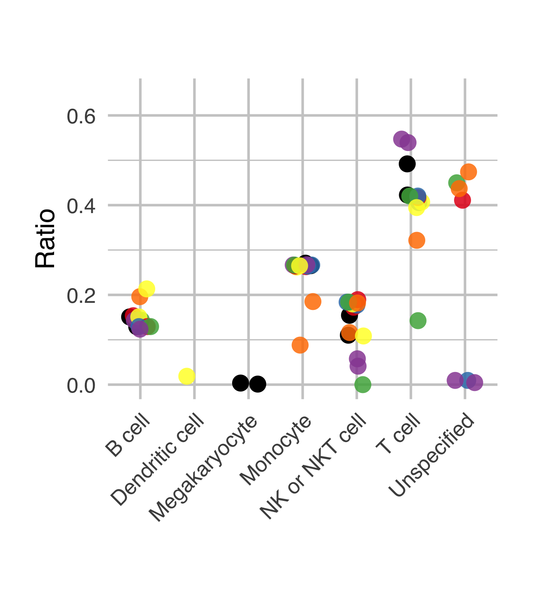
18.2 Lung cancer dataset
18.2.1 Heatmaps of marker gene expressions
Load the data.
rm(list = ls())
source("R/plot.R")
sc68_cisp <- readRDS(file = "backup/02_005_sc68_cisp_normalized.rds")
sc68_cisp_c <- readRDS(file = "backup/02_001_sc68_cisp_raw.rds")Make a log-normalized read count table for ASCL1, NEUROD1, YAP1, and POU2F3. Load the data.
cells <- sc68_cisp[["sample"]][["barcode"]]
genes <- c("ASCL1", "NEUROD1", "YAP1", "POU2F3")
mat <- sc68_cisp_c[["data"]][["raw"]]
mat <- mat[which(rownames(mat) %in% genes),]
mat <- mat[, which(colnames(mat) %in% cells)]
tmp <- log(mat + 1)
sc68_cisp[["data"]][["normalized"]] <- tmpThe following function plot_Heatmap_GenexSamp() shows normalized read counts
of a given gene set as a heatmap, using the results of
obj[["data"]][["normalized"]].
# ----------------------------------------
# sc68_cisp
# ----------------------------------------
filename <- "figures/figure_20_0200.png"
png(file = filename, height = 900, width = 2000, res = 300)
plot_Heatmap_GenexSamp(obj = sc68_cisp, genes = genes,
method = "ward.D2", show_nReads = TRUE,
title = "Lung cancer scRNA-seq", name = "Expression")
dev.off()18.2.2 Multi-layered analysis
Load the data.
rm(list = ls())
source("R/function_seurat.R")
source("R/function_asurat.R")
source("R/plot.R")
sc68_cisp_asurat <- readRDS(file = "backup/02_400_sc68_cisp_all.rds")Check the size of the gene-by-sample matrices.
dim(sc68_cisp_asurat[["data"]][["bayNorm"]][["Bay_out"]])[1,] 6347 2285Create Seruat objects.
sc68_cisp <- CreateSeuratObject(
counts = as.matrix(sc68_cisp_asurat[["data"]][["bayNorm"]][["Bay_out"]]),
project = "sc68_cisp")Run Seurat’s standard procedures but the clustering result will be replaced
with that of ASURAT.
Hence, parameters nfeatures, sc68_cisp_pc, and resolution are roughly set.
nfeatures <- round(0.2 * sc68_cisp@assays[["RNA"]]@counts@Dim[2])
sc68_cisp <- process_001_seurat(obj = sc68_cisp, nfeatures = nfeatures)
sc68_cisp_pc <- which(cumsum(sc68_cisp@reductions[["pca"]]@stdev) /
sum(sc68_cisp@reductions[["pca"]]@stdev) > 0.9)[1]
sc68_cisp <- process_002_seurat(obj = sc68_cisp, pc = sc68_cisp_pc,
resolution = 0.1)Assign a cell cycle phase to each cell.
s.genes <- cc.genes$s.genes
g2m.genes <- cc.genes$g2m.genes
sc68_cisp <- CellCycleScoring(sc68_cisp, s.features = s.genes,
g2m.features = g2m.genes, set.ident = FALSE)
tmp <- factor(sc68_cisp@meta.data[["Phase"]],
levels = c("G1", "S", "G2M", "Undecided"))
sc68_cisp@meta.data[["Phase"]] <- tmp
sc68_cisp_asurat[["sample"]][["phase"]] <- sc68_cisp@meta.data[["Phase"]]Add the cell labels to obj@meta.data[["asurat_clusters"]], which were inferred
by ASURAT’s computations (see previous section for the details).
tmp <- as.factor(sc68_cisp_asurat[["sample"]][["merlot_DO_disease"]])
sc68_cisp@meta.data[["asurat_clusters"]] <- tmp
sc68_cisp <- SetIdent(sc68_cisp, value = "asurat_clusters")Find differentially expressed genes using Seurat’s function and stores the
results into obj@misc[["markers"]].
sc68_cisp@misc[["markers"]] <- FindAllMarkers(
sc68_cisp, only.pos = T, min.pct = 0.25, logfc.threshold = 0.25)Users can check the marker genes of each cluster by the following command:
datatable(sc68_cisp@misc[["markers"]], rownames = FALSE)sc68_cisp
Select top topn genes, in terms of p-value, and show the expression levels
by complex heat map.
topn <- sc68_cisp@misc[["markers"]] %>% group_by(cluster)
topn_new <- topn %>% top_n(n=-10, p_val_adj) # Selecting by p_val_adj
topn_genes <- data.frame(gene = topn_new$gene, label = topn_new$cluster)
filename <- "figures/figure_20_0210.png"
png(file = filename, height = 2000, width = 1500, res = 300)
plot_Heatmap_seurat(obj = sc68_cisp, topn_genes = topn_genes,
method = "ward.D2", show_nReads = TRUE,
title = "sc68_cisp (ASURAT)", name = "Expr level",
show_rownames_nReads = FALSE, default_color = TRUE)
dev.off()
The following function plot_MultiHeatmaps_SignxSamp_GenexSamp() vertically
concatenates two or more heat maps for top n signs, with respect to sign score,
and top n genes with respect to p-value.
Users can remove signs by setting keywords (list of keywords separated by |)
which obviously seem to be unimportant or untranslatable.
topn <- sc68_cisp@misc[["markers"]] %>% group_by(cluster)
topn_new <- topn %>% top_n(n=-8, p_val_adj) # Selecting by p_val_adj
topn_genes <- data.frame(gene = topn_new$gene, label = topn_new$cluster)
topn_genes$label <- paste("DEG (group ", topn_genes$label, ")", sep = "")
tmp <- sc68_cisp_asurat[["marker"]][["DO"]][["disease"]][["all"]]
topn <- tmp %>% group_by(Label)
keywords <- "embryonal cancer|aplastic anemia|Diamond-Blackfan anemia"
keywords <- paste(keywords, "|meningioma|cervi|spondylitis")
topn <- topn[!((grepl(keywords, topn$Sign)) |
(grepl(keywords, topn$ParentDescription))),]
topn_new <- topn %>% top_n(3, sep_I)
topn_signs_DO <- data.frame(
sign = topn_new$Sign, description = topn_new$ParentDescription,
label = topn_new$Label)
keywords <- "viral|learning"
tmp <- sc68_cisp_asurat[["marker"]][["GO"]][["BP"]][["all"]]
topn <- tmp %>% group_by(Label)
topn <- tmp %>% group_by(Label)
topn <- topn[!((grepl(keywords, topn$Sign)) |
(grepl(keywords, topn$ParentDescription))),]
topn_new <- topn %>% top_n(2, sep_I)
topn_signs_GO <- data.frame(
sign = topn_new$Sign, description = topn_new$ParentDescription,
label = topn_new$Label)
keywords <- paste("Glioma|Ribosome|Oocyte|oocyte|path:hsa04650_S|",
"path:hsa04380_S|path:hsa05162_S|path:hsa05416_S|",
"path:hsa05140_S|path:hsa04662_S", sep = "")
tmp <- sc68_cisp_asurat[["marker"]][["KEGG"]][["pathway"]][["all"]]
topn <- tmp %>% group_by(Label)
topn <- tmp %>% group_by(Label)
topn <- topn[!((grepl(keywords, topn$Sign)) |
(grepl(keywords, topn$ParentDescription))),]
topn_new <- topn %>% top_n(5, sep_I)
topn_signs_KEGG <- data.frame(
sign = topn_new$Sign, description = topn_new$ParentDescription,
label = topn_new$Label)
topn_signs <- list(topn_signs_DO, topn_signs_GO, topn_signs_KEGG)
filename <- "figures/figure_20_0211.png"
png(file = filename, height = 3200, width = 2000, res = 300)
plot_MultiHeatmaps_SignxSamp_GenexSamp(
obj = sc68_cisp_asurat, topn_genes = topn_genes, topn_signs = topn_signs,
data_types = c("DO", "GO", "KEGG"),
categories = c("disease", "BP", "pathway"),
algo_names = c("merlot", NULL, NULL),
show_labels = c(TRUE, FALSE, FALSE),
method = "ward.D2", show_nReads = FALSE,
title = "sc68_cisp (ASURAT)",
names_signs = c("DO:\ndisease", "GO:\nBP", "KEGG:\npathway"),
name_genes = "Expression",
show_rownames_sign = TRUE, show_rownames_label = FALSE,
show_rownames_nReads = FALSE, default_colors = c(TRUE, FALSE, FALSE),
show_cellcycle = TRUE
)
dev.off()
Save the objects.
saveRDS(sc68_cisp, file = "backup/20_001_sc68_cisp.rds")
saveRDS(sc68_cisp_asurat, file = "backup/20_002_sc68_cisp_asurat.rds")Load the data.
sc68_cisp <- readRDS(file = "backup/20_001_sc68_cisp.rds")
sc68_cisp_asurat <- readRDS(file = "backup/20_002_sc68_cisp_asurat.rds")18.3 Pancreatic ductal adenocarcinoma (PDAC) datasets
18.3.1 Clustering PDAC spatial transcriptomes
Load the data.
pdac_aint <- readRDS(file = "backup/07_400_pdac_aint_all.rds")
pdac_ast1 <- readRDS(file = "backup/05_005_pdac_ast1_normalized.rds")
fn <- "data/2020_001_Moncada/pdac_ast1/tissue_positions_list_spatial_object.tsv"Create a Seurat object keeping only ST spots in integrated data pdac_aint.
# ----------------------------------------
# pdac_aint
# ----------------------------------------
tmp <- pdac_aint[["sample"]]
tmp <- tmp[which(tmp$orig_ident == "ST"),]
pdac_aint[["sample"]] <- tmp
mat <- pdac_aint[["sign"]][["CBxSample"]][["cell"]]
tmp <- pdac_aint[["sample"]][["barcode"]]
mat <- mat[, which(colnames(mat) %in% tmp)]
colnames(mat) <- pdac_ast1[["sample"]][["spot"]] # This is required by Spaniel
# ----------------------------------------
# se
# ----------------------------------------
se <- Spaniel::createSeurat(counts = mat, barcodeFile = fn,
projectName = "PDAC-A", sectionNumber = "1")
se@images <- pdac_aint[["misc"]][["images"]]Pre-processing.
tmp <- pdac_aint[["sample"]][["seuratFindClusters_CB_cell"]]
se@meta.data[["cluster"]] <- tmp
tmp <- pdac_aint[["sample"]]
tmp <- tmp[which(tmp$orig_ident == "ST"),]
se@meta.data[["phase"]] <- tmp$phase
SetIdent(se, value = "cluster")
se <- ScaleData(se)Visualize putative clusters on histological images.
Note that spanielPlot_2() is custom-build.
p <- spanielPlot(object = se, grob = se@images[[1]], plotType = "Cluster",
clusterRes = "cluster", ptSize = 2.5,
customTitle = "Cluster (CB: cell)")
filename <- "figures/figure_20_0300.png"
ggsave(file = filename, plot = p, dpi = 300, width = 5.1, height = 4.2)
Visualize cell cycle phases on histological images.
Note that spanielPlot_3() is custom-build, which can only be used for
plotting cell cycle phases.
p <- spanielPlot(object = se, grob = se@images[[1]], plotType = "Cluster",
clusterRes = "phase", ptSize = 2.5,
customTitle = "Cell cycle phase")
filename <- "figures/figure_20_0301.png"
ggsave(file = filename, plot = p, dpi = 300, width = 5.1, height = 4.2)
Visualize sign scores on histological images.
Note that spanielPlot_2() is custom-build.
Note here that in se hyphens “-” were replaced with underscores "_".
p <- spanielPlot(object = se, grob = se@images[[1]], plotType = "Gene",
gene = "DOID:3498-S", ptSizeMax = 2.5, ptSizeMin = 0,
customTitle = "DOID:3498_S")
filename <- "figures/figure_20_0310.png"
ggsave(file = filename, plot = p, dpi = 300, width = 4.7, height = 4.1)

Change datatype.
mat <- pdac_aint[["sign"]][["GOxSample"]][["BP"]]
tmp <- pdac_aint[["sample"]][["barcode"]]
mat <- mat[, which(colnames(mat) %in% tmp)]
colnames(mat) <- pdac_ast1[["sample"]][["spot"]] # This is required by Spaniel
se <- Spaniel::createSeurat(counts = mat, barcodeFile = fn,
projectName = "PDAC-A", sectionNumber = "1")
se@images <- pdac_aint[["misc"]][["images"]]
se <- ScaleData(se)Visualize sign scores on histological images.
Note that spanielPlot_2() is custom-build.
Note here that in se hyphens “-” were replaced with underscores "_".
p <- spanielPlot(object = se, grob = se@images[[1]], plotType = "Gene",
gene = "GO:0030857-S", ptSizeMax = 2.5, ptSizeMin = 0,
customTitle = "GO:0030857_S")
filename <- "figures/figure_20_0312.png"
ggsave(file = filename, plot = p, dpi = 300, width = 4.7, height = 4.1)
Change datatype.
mat <- pdac_aint[["sign"]][["KEGGxSample"]][["pathway"]]
tmp <- pdac_aint[["sample"]][["barcode"]]
mat <- mat[, which(colnames(mat) %in% tmp)]
colnames(mat) <- pdac_ast1[["sample"]][["spot"]] # This is required by Spaniel
se <- Spaniel::createSeurat(counts = mat, barcodeFile = fn,
projectName = "PDAC-A", sectionNumber = "1")
se@images <- pdac_aint[["misc"]][["images"]]
se <- ScaleData(se)Visualize sign scores on histological images.
Note that spanielPlot_2() is custom-build.
Note here that in se hyphens “-” were replaced with underscores "_".
p <- spanielPlot(object = se, grob = se@images[[1]], plotType = "Gene",
gene = "path:hsa04972-S", ptSizeMax = 2.5, ptSizeMin = 0,
customTitle = "KEGG:hsa04972_S")
filename <- "figures/figure_20_0313.png"
ggsave(file = filename, plot = p, dpi = 300, width = 4.63, height = 4.1)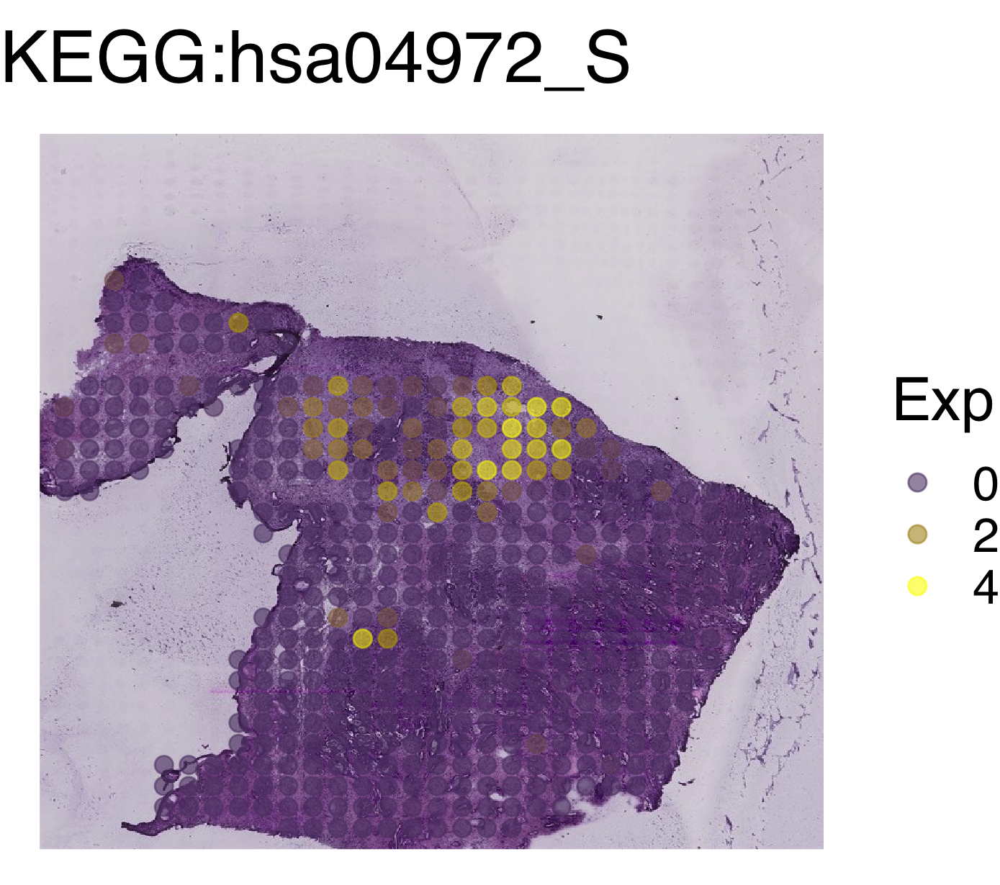